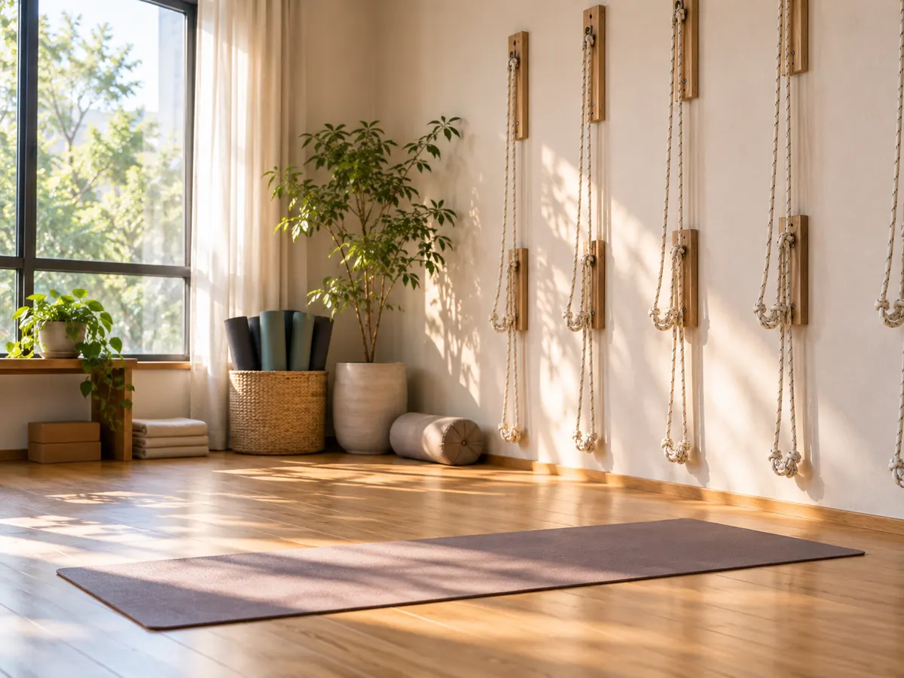

瑜伽早上練還是晚上練？按生活作息選時段

你把早班加進行事曆，才想到出門前還要送孩子。改看晚班，又怕加班一多就去不了。真正難選的，往往是哪一段時間能留得住。
瑜伽早練或晚練，可以從能持續的時段、當時精神與離就寢多遠來選。剛起床或下班疲累時，先用較小動作與可用支點熟悉節奏，比硬趕同一套強度容易掌握。可記下實際出席與練習後感受。時段無法單獨預測受傷風險，也不能取代持續睡眠困擾的評估。
早上和晚上，哪個時段比較有可能持續？
先回看最近一週，找出比較能保留的空檔，再把通勤與準備時間算進去。早上容易趕，可先看有無較短的安排；晚上容易臨時加班，可保留替代時段。選班時，同時考量課程節奏及是否能調整動作。
👆 手機版可左右滑動
| 排課時段 | 先問自己 | 怎麼試排 |
|---|---|---|
| 出門前 | 有沒有足夠時間準備，還是每天都得趕？ | 找每週真的能留住的一天。 |
| 下班後 | 加班或通勤是否常讓你錯過？ | 挑一個可替代的備用時段。 |
| 靠近就寢 | 這段時間是想留給休息，還是仍有餘裕上課？ | 把課程安排和睡前活動分開試。 |
晚上只剩睡前一點時間，還要排正式練習嗎？
可以把睡前是否適合留短時間調整支撐，和每週要不要安排一堂課分開考慮。若晚間只是想躺得舒服，可看睡前背部支撐篇；若長期睡不好或日間功能受影響，先尋求合適評估。選好你比較做得到的時段後，再看課程方式與時段。 NHS 失眠資訊。
常見問題
早上或晚上有人人都適合的最佳時段嗎？
先看哪個時段能持續，再依當天的精神和課程節奏調整。
想確認現有時段，先去哪裡看？
可先看課程方式，再依上班、通勤與休息安排考慮。
把做得到的時段留給練習
先挑一個你比較能保留的空檔，再看對應的課型、時段與費用。
查看課程方式與時段 →延伸閱讀 如果只想睡前休息，可先看背部支撐篇